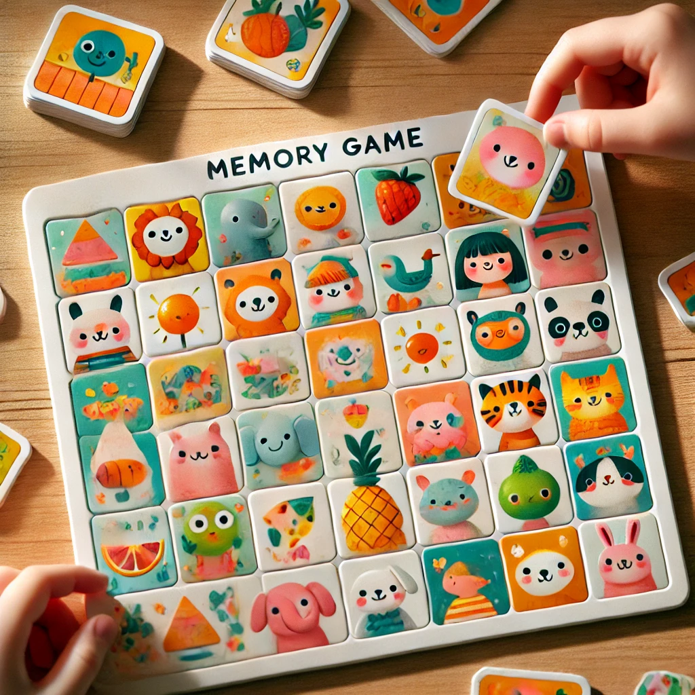
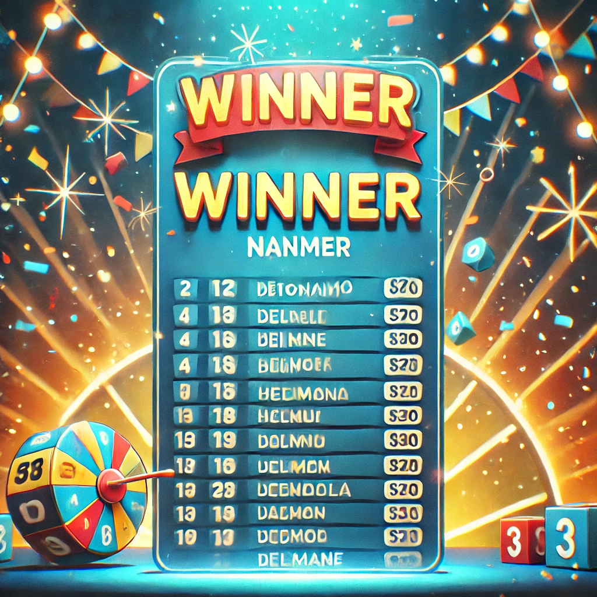
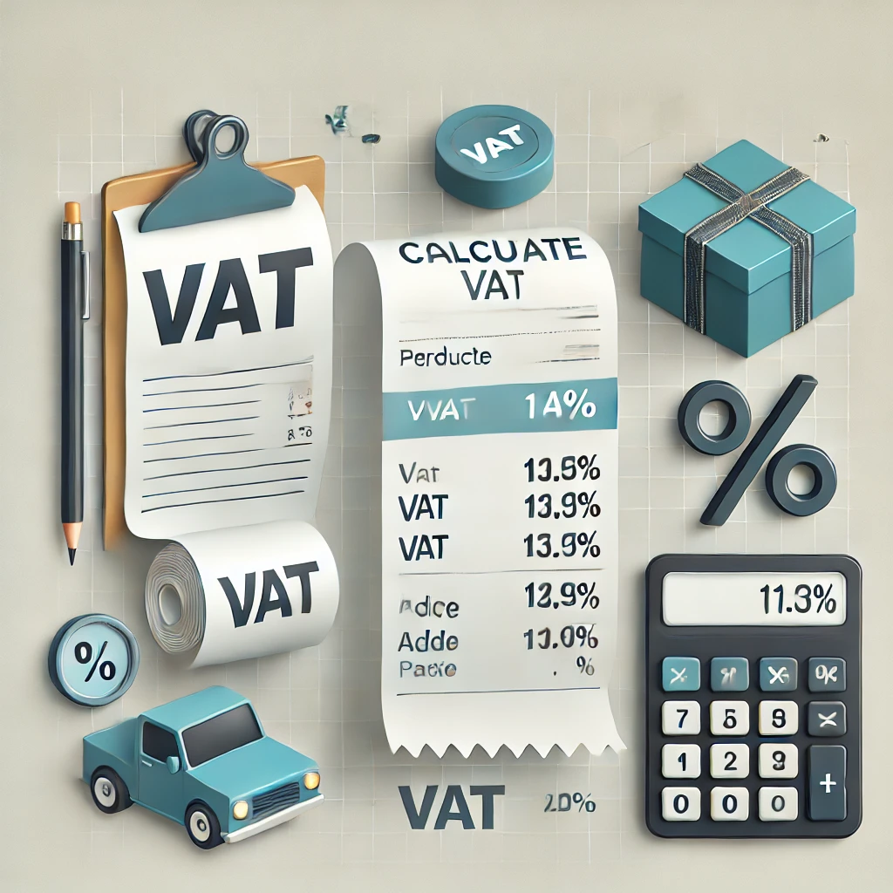

Proyectos
En esta sección encontrarás una selección de los proyectos más destacados en los que he trabajado. Cada uno de ellos representa un desafío único y una oportunidad para aplicar mis habilidades en el desarrollo de software. Desde aplicaciones web hasta soluciones móviles, cada proyecto refleja mi compromiso con la excelencia técnica y la innovación en el diseño de interfaces y la arquitectura de software.
Proyecto 1
Esta calculadora web es una herramienta sencilla y fácil de usar para realizar operaciones aritméticas básicas como suma, resta, multiplicación y división. Diseñada para ser accesible desde cualquier dispositivo con conexión a internet, ofrece una interfaz limpia y eficiente para cálculos rápidos.
 Ver mi proyecto
Ver el repositorio
Ver mi proyecto
Ver el repositorio
Proyecto 2
Este proyecto es una aplicación web diseñada para facilitar la organización de compras. Con una interfaz intuitiva, los usuarios pueden crear, editar y gestionar sus listas de compras de manera eficiente.
Ver mi proyecto Ver el repositorioProyecto 3
El objetivo del juego es encontrar y emparejar todas las cartas iguales en el menor número de intentos posible.

Ver mi proyecto Ver el repositorioProyecto 4
Este proyecto está basado en generar listas de tareas pendientes y tener mejor organización en el día a día.
Ver mi proyecto Ver el repositorioProyecto 5
Este proyecto está basado en el juego de las torres de hanoi, el objetivo del juego es mover todos los discos de la torre 1 a la torre 3, sin colocar un disco más grande sobre uno más pequeño.
Ver mi proyecto Ver el repositorioProyecto 6
El juego de la víbora o Snake es un clásico arcade donde controlas una serpiente que se mueve por la pantalla para comer objetos (como manzanas). Cada vez que come, crece en tamaño, y el objetivo es evitar chocar con los bordes o contigo mismo mientras acumulas puntos. Es un juego simple pero adictivo, popular en celulares antiguos y computadoras retro. 🎮🐍
 Ver
mi proyecto
Ver
el repositorio
Ver
mi proyecto
Ver
el repositorio
Proyecto 7
Este proyecto está basado en generar listas de personas y sortear aleatoriamente un ganador entre las personas agregadas.

Ver mi proyecto Ver el repositorioProyecto 8
Este proyecto está basado en calcular el IVA de un producto, el objetivo es ingresar el precio del producto y calcular el IVA del producto.

Ver mi proyecto Ver el repositorio